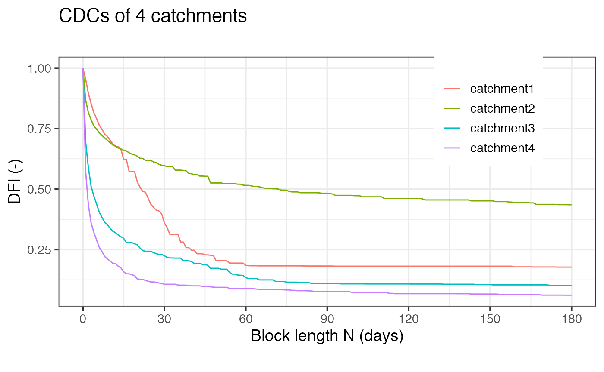
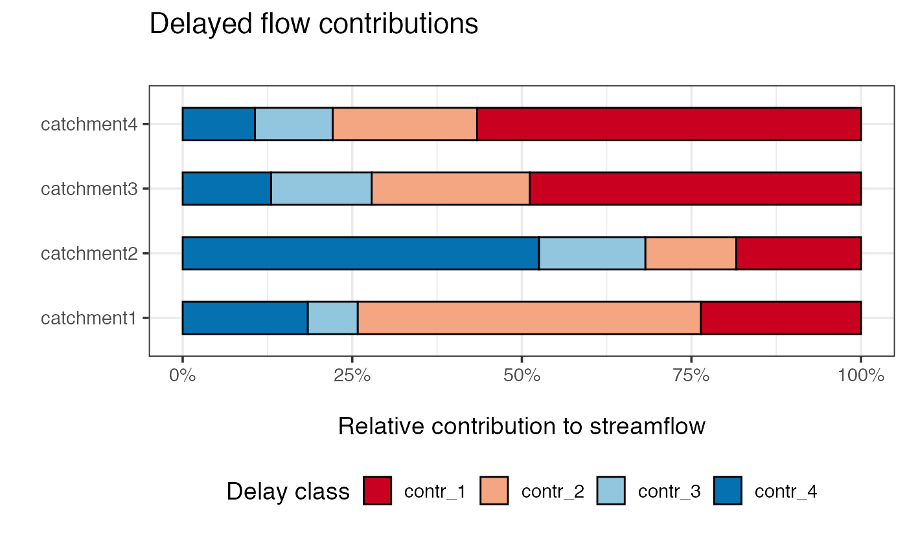

vignettes/tidy_streamflow_contr.Rmd
tidy_streamflow_contr.RmdThis is a quick example how to use the delayedflow package in a R tidyverse environment.
df <- read_tsv('https://raw.githubusercontent.com/modche/science_contr/master/4ezg.txt', col_types = cols())
df %>% group_by(filename) %>% summarise(cdc = dfi_n(q = q, n = 1:180)$dfi, .groups = "keep", n = 0:180 ) %>% ungroup() %>% ggplot(aes(x=n, y = cdc)) + geom_line(aes(colour = filename)) + scale_x_continuous(breaks = c(0:6 * 30)) + theme_bw(14) + labs(title = "Delayed Flow Analysis for 4 catchments", subtitle = "", caption = "", colour = "CDCs", x = "Block length N (days)", y = "DFI (-)")+ theme(legend.position = c(0.80, 0.70))

df2 <- df %>% group_by(filename) %>% summarise(cdc = dfi_n(q = q, n = 1:180)$dfi, .groups = "keep", n = 0:180 ) %>% ungroup() df2
## # A tibble: 724 x 3
## filename cdc n
## <chr> <dbl> <int>
## 1 catchment1 1 0
## 2 catchment1 0.953 1
## 3 catchment1 0.895 2
## 4 catchment1 0.853 3
## 5 catchment1 0.816 4
## 6 catchment1 0.791 5
## 7 catchment1 0.764 6
## 8 catchment1 0.747 7
## 9 catchment1 0.727 8
## 10 catchment1 0.718 9
## # … with 714 more rowsbp_df <- df2 %>% group_by(filename) %>% summarize(bps = find_bps(cdc, n_bp = 3, bp_max = 65)$bps_position) %>% mutate(id = names(bps)) %>% ungroup() %>% pivot_wider(names_from = "id", values_from = "bps")
## Calculating breakpoints . . .
## 0% 20 % 40 % 60 % 80 % 100 %
## Breakpoints ready . . .
## Calculating breakpoints . . .
## 0% 20 % 40 % 60 % 80 % 100 %
## Breakpoints ready . . .
## Calculating breakpoints . . .
## 0% 20 % 40 % 60 % 80 % 100 %
## Breakpoints ready . . .
## Calculating breakpoints . . .
## 0% 20 % 40 % 60 % 80 % 100 %
## Breakpoints ready . . .
bp_df
## # A tibble: 4 x 4
## filename bp_1 bp_2 bp_3
## <chr> <int> <int> <int>
## 1 catchment1 6 38 60
## 2 catchment2 2 11 47
## 3 catchment3 3 16 61
## 4 catchment4 2 8 30## Calculating breakpoints . . .
## 0% 20 % 40 % 60 % 80 % 100 %
## Breakpoints ready . . .
## Calculating breakpoints . . .
## 0% 20 % 40 % 60 % 80 % 100 %
## Breakpoints ready . . .
## Calculating breakpoints . . .
## 0% 20 % 40 % 60 % 80 % 100 %
## Breakpoints ready . . .
## Calculating breakpoints . . .
## 0% 20 % 40 % 60 % 80 % 100 %
## Breakpoints ready . . .## # A tibble: 16 x 3
## filename rel_contr class
## <chr> <dbl> <chr>
## 1 catchment1 0.236 contr_1
## 2 catchment1 0.506 contr_2
## 3 catchment1 0.0736 contr_3
## 4 catchment1 0.184 contr_4
## 5 catchment2 0.184 contr_1
## 6 catchment2 0.134 contr_2
## 7 catchment2 0.157 contr_3
## 8 catchment2 0.525 contr_4
## 9 catchment3 0.488 contr_1
## 10 catchment3 0.233 contr_2
## 11 catchment3 0.148 contr_3
## 12 catchment3 0.130 contr_4
## 13 catchment4 0.566 contr_1
## 14 catchment4 0.213 contr_2
## 15 catchment4 0.114 contr_3
## 16 catchment4 0.107 contr_4ggplot(data = contr_df) + geom_col(aes(x = rel_contr, y = filename, fill = class), width = 0.50, colour = "black") + scale_fill_brewer(palette = "RdBu", direction = 1, guide = guide_legend(reverse = FALSE), name = "Delay class") + scale_x_continuous(labels = scales::percent_format()) + theme_bw(14) + theme(legend.position = "bottom") + labs(title = "Delayed flow contributions", subtitle = "", caption = "", x = "\nRelative contribution to streamflow", y = "")

In this example Catchment #1 has a high proportion of intermediate contributions (i.e. here snow melt from a high alpine catchment). Catchment #2 has > 50% baseline contributions that means it is highly groundwater-dominated. Comparing Catchment #4 vs. Catchment #3 the first one has more short-delayed contributions also visible in the rapid drop in the CDC curve above.